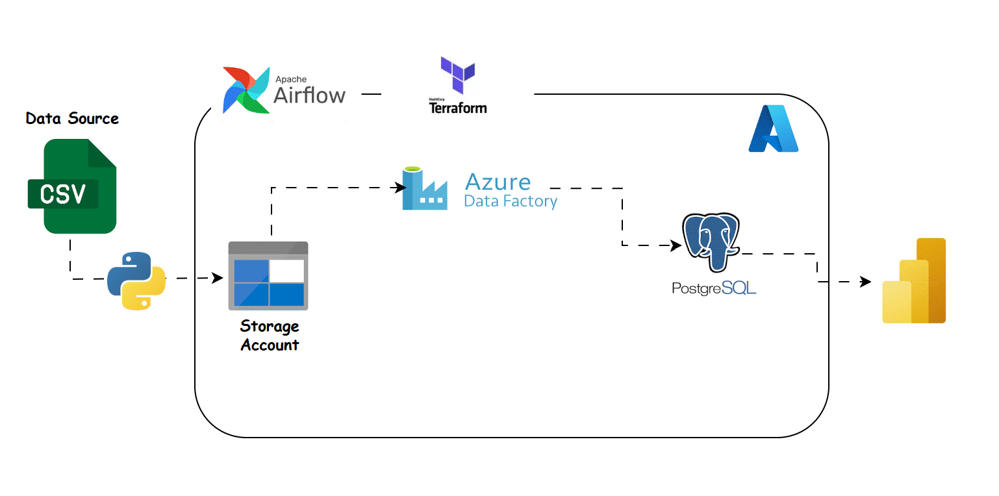
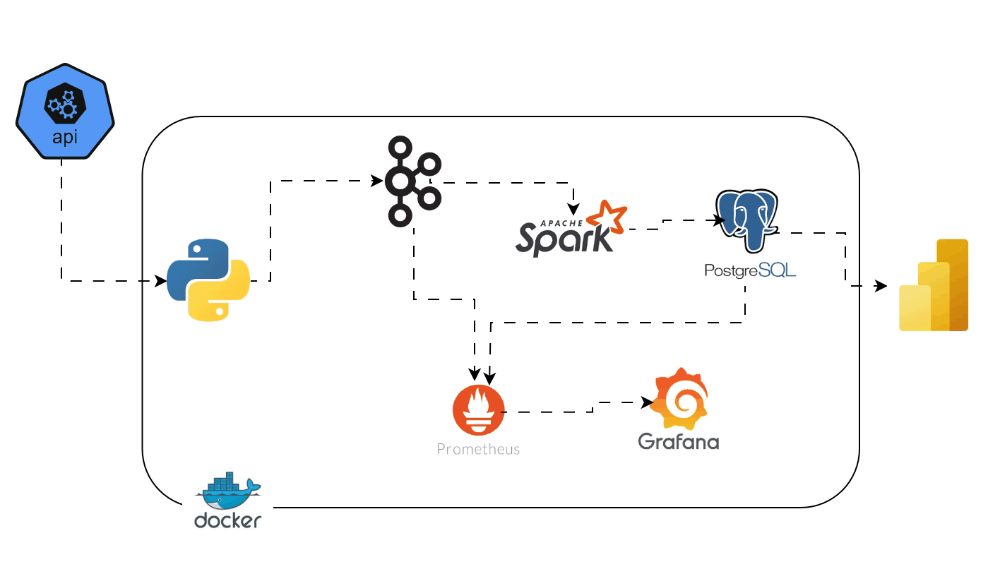
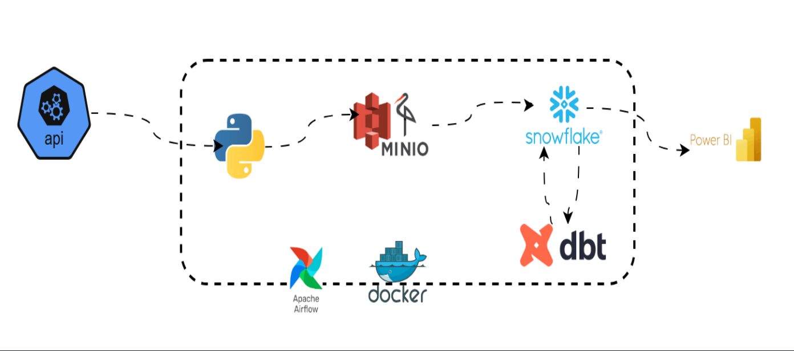
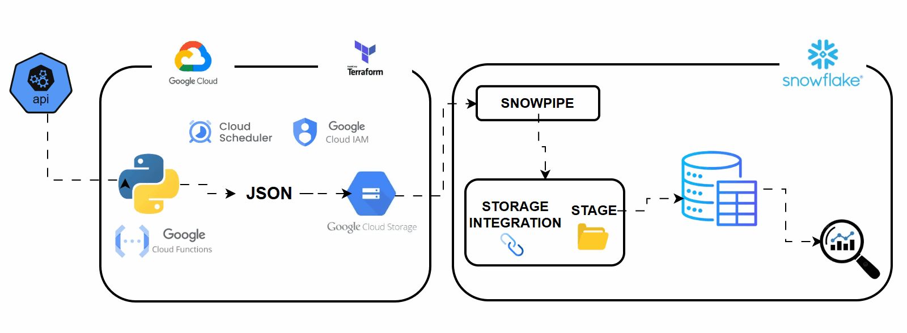

I am a Data and Analytics Engineer, preparing and transforming raw data into reliable, actionable insights.
I build data pipelines that support informed decision-making and business growth.
With experience across the data lifecycle, from ingestion and transformation to deployment
and monitoring, I deliver solutions that are efficient, reliable and future-ready.
I am driven by curiousity, and opportunity to create impact through data, and empower organizations to thrive using data.
CivicPulse is a public sector data engineering and analytics initiative designed to transform
New York City's 311 service request data into actionable operational intelligence.
The goal is to identify the most common service requests across neighborhoods, uncover emerging
community needs, and enable city agencies to make faster, data-driven decisions.

VoxStocks is a real-time stock analysis and monitoring pipeline built to process
live trade data as it flows through the system. The architecture ingests trade events through an API,
processes and routes them with Kafka and Spark, and stores data in PostgreSQL.
The pipeline is also continuously monitored with Prometheus and Grafana to detect unexpected shutdowns
and ensure trade flow remains stable, reliable, and observable.

Triplens Global is a agency using analytics to turns public country data into travel-ready insights for
tourists and travelers exploring new destinations.
The goal is to help people quickly understand the essentials about a country before they make their move.
Key facts like region, language, currency, time zone, neighboring countries, and other helpful background
details that can influence planning and decision-making.

Cloud-ready PostgreSQL database schema with normalized design and synthetic data generation using Python.
